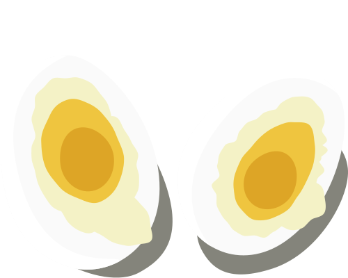

How to Order Eggs
An illustrated guide on ways to cook eggs

Hard Boiled
Cooked in boiling water with the shell on until yolk is completely set

Soft Boiled Eggs
Cooked in boiling water with the shell on until whites are set, but yolk is still liquid

Sunny Side Up
Fried without ever flipping the egg, whites are cooked but yolk remains liquid

Poached
Removed from shell, then cooked in hot water or some other liquid

Over Easy
Fried until white is cooked, then flipped over momentarily so only the top of yolk is set

Over Hard
Fried until white is cooked, then flipped and cooked until yolk is completely set

Scrambled
Raw eggs beaten so the egg whites and yolks are mixed, then cooked in a skillet